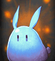

| 【N】力３増加 |
 |
ブリザード火炎犬 |  |
ルビント |
 |
花霊ベル |  |
花霊ローズ |
 |
崖ミニゴースト | 強欲のゴーレム |
 |
青の火炎犬 |  |
青の閃光犬 |
 |
復讐のゴーレム |  |
憤怒のゴーレム |
 |
変異火炎犬 |  |
勇気のゴーレム |
| 【N】知識３増加 |
 |
ライット |  |
レビント |
 |
ロイット | 乙女ミニゴースト |
 |
花霊アイリス | 花霊アサガオ |
| 花霊スミレ |  |
花霊ノウゼン |
 |
海ミニゴースト |  |
紫の火炎犬 |
 |
祝福のゴーレム |  |
森ミニゴースト |
 |
紳士ミニゴースト |  |
忘却のゴーレム |
 |
緑の火炎犬 |  |
貪欲のゴーレム |
| 【N】健康３増加 |
 |
ブビット |  |
ルイット |
|  | レイット |  |
花霊アマドコロ |
 |
花霊ウィロウ |  |
灰の火炎犬 |
 |
岩ミニゴースト |  |
砂漠ミニゴースト |
| 正義のゴーレム | 赤の火炎犬 |
| 不屈のゴーレム |
| 【N】カリスマ３増加 |
| リビット |  |
ルビット |
| レビット | ロビット |
 |
花霊カスミ |  |
花霊ナノハ |
| 花霊ワスレナ | 希望のゴーレム |
| 幸福のゴーレム | 紫の閃光犬 |
 |
水色の閃光犬 |  |
赤の閃光犬 |
 |
滝ミニゴースト |  |
地下ミニゴースト |
 |
平原ミニゴースト |  |
墓地ミニゴースト |
| 【Ｒ】力５増加 |
 |
ファフ |  |
ボーンソルジャー |
| ボーンナイト |  |
モヒカンキャロ |
 |
レッドアブソル |  |
ロードアブソル |
 |
強靭なヒヨコ戦士 |  |
空色のルジュエ |
| 【Ｒ】知識５増加 |
 |
フロキャロ | ポフ |
 |
暗闇のフレア | 黄昏のフレア |
 |
血色のルジュエ |  |
賢明なヒヨコ戦士 |
 |
疾風のヒヨコ戦士 | 呪いのフレア |
 |
堕落のフレア |
| 【Ｒ】健康５増加 |
| グリーンアブソル |  |
パープルアブソル |
 |
パフ |  |
ボーンウォリアー |
 |
ボーンヒーロー |  |
リーゼントキャロ |
 |
ルジュエ |  |
壮健なヒヨコ戦士 |
| 太糸のルジュエ |
| 【Ｒ】カリスマ５増加 |
 |
ブルーアブソル |  |
プフ |
 |
ボーンシーフ | リボンのルジュエ |
 |
ヴィド |  |
強運のヒヨコ戦士 |
| 地獄のフレア |
| 【ＨＲ】力２０増加 |
| グリフォン |  |
タイムシュラット |
| トゥルイク |  |
ハウンデブル |
| 【ＨＲ】知識２０増加 |
 |
ウィッチマゴ |  |
クリスマスフェアリー |
| コボルト大魔導師 |  |
フォクシーテール |
| 【ＨＲ】健康２０増加 |
 |
エマティース | ドベルト |
| ナイトスピア |
| 【ＨＲ】カリスマ２０増加 |
 |
ドレアス |  |
マスクグール |
 |
泣き虫ルドルフ |
| 【ＳＲ】力１/レベル８ |
 |
ラミア |  |
レオフォールド |
 |
吸血姫 |
| 【ＳＲ】知識 １/レベル８ |
| アイスクイーン |  |
ラクネーラ |
| 【ＳＲ】健康 １/レベル８ |
| インキュバス |  |
サンタレビット |
 |
メリアス |
| 【ＳＲ】カリスマ１/レベル８ | 【ＳＲ】運１/レベル８ |
| アマニタマジシャン |  |
ラストウィッチ |
| ＬＲ】健康１/レベル２ |
 |
アグレアス |
| 【ＬＲ】知識１/レベル２ | 【ＬＲ】力 １/レベル２ |
| アビス |  |
ヴァルキリー |
| ＬＲ】カリスマ１/レベル２ | ＬＲ】運 １/レベル２ |
 |
プチファルコン | プチシュラグ |
| 【ＧＲ】力 1/3 健康 1/3 | 【ＧＲ】知識 1/3 カリスマ 1/3 |
 |
ルミエール |  |
ダイン |
| 【ＧＲ】敏捷 1/3 運 1/3 |
 |
プロバゴス |